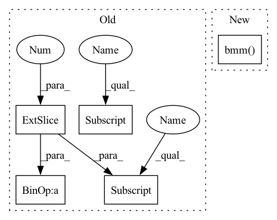

Pattern ID :26210

Before Change
imgRep = np.matmul(P, objPts_w_ex.T).T
imgRep[:, 0] = imgRep[:, 0] / imgRep[:, 2]
imgRep[:, 1] = imgRep[:, 1] / imgRep[:, 2]
error = np.sqrt((imgPts[:, 0] - imgRep[:, 0].reshape((self.n, 1))) ** 2 + (
imgPts[:, 1] - imgRep[:, 1].reshape((self.n, 1))) ** 2)
error = np.sum(error, axis=0) / self.n
return error[0]
After Change
// concat 1 to the last column of objPts_w
objPts_w_ex = torch.cat((objPts_w, torch.ones_like(objPts_w[:, :, :1])), dim=-1)
// Calculate the image points
imgRep = torch.bmm(P, objPts_w_ex.transpose(dim0=-1, dim1=-2)).transpose(dim0=-1, dim1=-2)
// Normalize the image points
imgRep = imgRep[:, :, :2] / imgRep[:, :, 2:]
In pattern: SUPERPATTERN
Frequency: 3
Non-data size: 5
Instances
Fragment ID: 78917460
Project Name: pypose/pypose
Commit Name: f93c59c3ad352fe90aa3072311a7ca67fa442243
Time: 2023-02-25
Author: zitongz3@illinois.edu
File Name: pypose/module/pnp.py
M Class Name: EPnP
N Class Name: EPnP
M Method Name: reprojection_error(5)
N Method Name: reprojection_error(4)
M Parent Class:
N Parent Class:
M File Name: pypose/module/pnp.py
N File Name: pypose/module/pnp.py
M Start Line: 456
M End Line: 466
N Start Line: 469
N End Line: 492
'>
Before Change
imgRep = np.matmul(P, objPts_w_ex.T).T
imgRep[:, 0] = imgRep[:, 0] / imgRep[:, 2]
imgRep[:, 1] = imgRep[:, 1] / imgRep[:, 2]
error = np.sqrt((imgPts[:, 0] - imgRep[:, 0].reshape((self.n, 1))) ** 2 + (
imgPts[:, 1] - imgRep[:, 1].reshape((self.n, 1))) ** 2)
error = np.sum(error, axis=0) / self.n
return error[0]
After Change
// concat 1 to the last column of objPts_w
objPts_w_ex = torch.cat((objPts_w, torch.ones_like(objPts_w[:, :, :1])), dim=-1)
// Calculate the image points
imgRep = torch.bmm(P, objPts_w_ex.transpose(dim0=-1, dim1=-2)).transpose(dim0=-1, dim1=-2)
// Normalize the image points
imgRep = imgRep[:, :, :2] / imgRep[:, :, 2:]
'>
Fragment ID: 78917461
Project Name: pypose/pypose
Commit Name: f93c59c3ad352fe90aa3072311a7ca67fa442243
Time: 2023-02-25
Author: zitongz3@illinois.edu
File Name: pypose/module/pnp.py
M Class Name: EPnP
N Class Name: EPnP
M Method Name: reprojection_error(5)
N Method Name: reprojection_error(4)
M Parent Class:
N Parent Class:
M File Name: pypose/module/pnp.py
N File Name: pypose/module/pnp.py
M Start Line: 456
M End Line: 466
N Start Line: 469
N End Line: 492
'>
Before Change
else:
cart_min_range = self.cart_pixel_width // 2 * self.cart_resolution
metric_coords = pixel_coords
metric_coords[:,:,0] = cart_min_range - self.cart_resolution * pixel_coords[:,:,1]
metric_coords[:,:,1] = self.cart_resolution * pixel_coords[:,:,0] - cart_min_range
return metric_coords
After Change
B, N, _ = pixel_coords.size()
R = torch.tensor([[0, -self.cart_resolution], [self.cart_resolution, 0]]).expand(B, 2, 2).to(self.gpuid)
t = torch.tensor([[self.cart_min_range],[-self.cart_min_range]]).expand(B, 2, N).to(self.gpuid)
return (torch.bmm(R, pixel_coords.transpose(2, 1).contiguous()) + t).transpose(2, 1)
'>
Fragment ID: 78917462
Project Name: utiasasrl/hero_radar_odometry
Commit Name: 1d01e44097b23a7931ab784e9ba36db208d2ffa4
Time: 2020-11-16
Author: keenburn2004@gmail.com
File Name: networks/svd.py
M Class Name: SVD
N Class Name: SVD
M Method Name: convert_to_radar_frame(2)
N Method Name: convert_to_radar_frame(2)
M Parent Class: torch.nn.Module
N Parent Class: torch.nn.Module
M File Name: networks/svd.py
N File Name: networks/svd.py
M Start Line: 54
M End Line: 61
N Start Line: 59
N End Line: 62
'>
Before Change
raise ValueError("The weight list should be a 2d tensor!")
num_node = feat_list[0].shape[0]
weighted_feat = torch.mul(feat_list[0], weight_list[:, 0].view(num_node, 1))
for i in range(1, len(feat_list)):
weighted_feat = weighted_feat + torch.mul(feat_list[i], weight_list[:, i].view(num_node, 1))
"""feat_reshape = torch.stack(feat_list, dim=2)
weight_reshape = weight_list.unsqueeze(dim=2)
After Change
feat_reshape = torch.stack(feat_list, dim=2)
weight_reshape = weight_list.unsqueeze(dim=2)
weighted_feat = torch.bmm(feat_reshape, weight_reshape).squeeze(dim=2)
return weighted_feat
'>
Fragment ID: 78917459
Project Name: pku-dair/sgl
Commit Name: 18054d1299613d29452a2ea780ffc54d98e1c5bd
Time: 2022-02-24
Author: shengzeang@live.com
File Name: models/utils.py
M Class Name: AnonimousClass
N Class Name: AnonimousClass
M Method Name: two_dim_weighted_add(2)
N Method Name: two_dim_weighted_add(2)
M Parent Class:
N Parent Class:
M File Name: models/utils.py
N File Name: models/utils.py
M Start Line: 54
M End Line: 59
N Start Line: 54
N End Line: 56